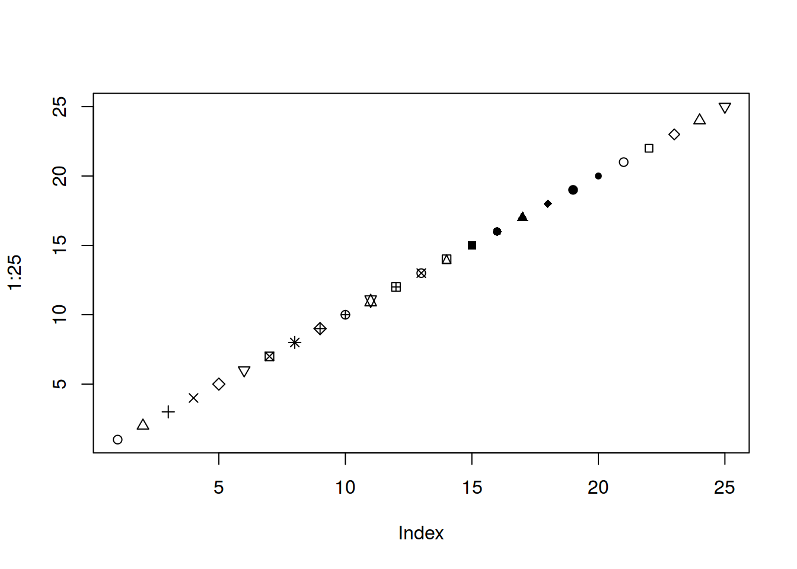
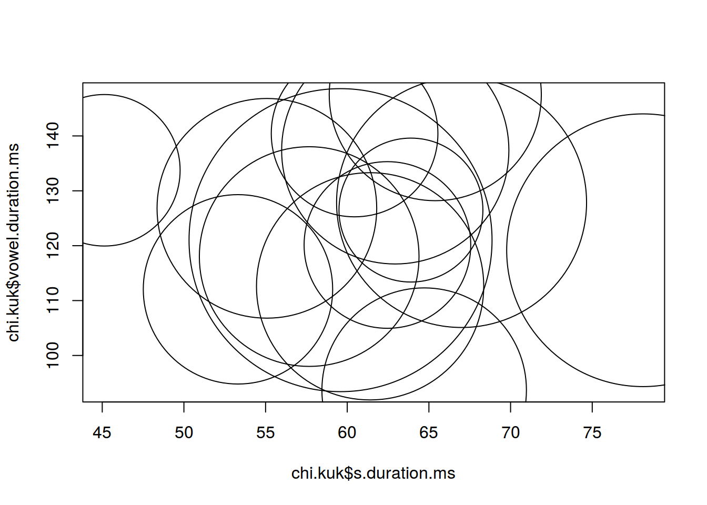

Визуализация данных. Пакет ggplot2 и его расширения. Пакет plotly. R Markdown. R Notebook. Shiny
library(tidyverse)## Loading tidyverse: ggplot2
## Loading tidyverse: tibble
## Loading tidyverse: tidyr
## Loading tidyverse: readr
## Loading tidyverse: purrr## Conflicts with tidy packages ----------------------------------------------## filter(): dplyr, stats
## lag(): dplyr, statschi.kuk <- read.csv("http://goo.gl/Zjr9aF")
ggplot(data = chi.kuk, aes(x = chi.kuk$s.duration.ms, y = chi.kuk$vowel.duration.ms)) +
geom_smooth() +
geom_point()## `geom_smooth()` using method = 'loess'ggplot(data = chi.kuk, aes(x = chi.kuk$s.duration.ms, y = chi.kuk$vowel.duration.ms)) +
geom_smooth(aes(color = "red")) +
geom_point()## `geom_smooth()` using method = 'loess'ggplot(data = chi.kuk, aes(x = chi.kuk$s.duration.ms, y = chi.kuk$vowel.duration.ms)) +
geom_smooth() +
geom_point(aes(color = "red"))## `geom_smooth()` using method = 'loess'
ggplot(data = chi.kuk, aes(x = chi.kuk$s.duration.ms, y = chi.kuk$vowel.duration.ms, color = "red")) +
geom_smooth() +
geom_point()## `geom_smooth()` using method = 'loess'plot(1:40, pch = 1:40)## Warning in plot.xy(xy, type, ...): не разработанное pch-значение '26'## Warning in plot.xy(xy, type, ...): не разработанное pch-значение '27'## Warning in plot.xy(xy, type, ...): не разработанное pch-значение '28'## Warning in plot.xy(xy, type, ...): не разработанное pch-значение '29'## Warning in plot.xy(xy, type, ...): не разработанное pch-значение '30'## Warning in plot.xy(xy, type, ...): не разработанное pch-значение '31'
plot(chi.kuk$s.duration.ms, chi.kuk$vowel.duration.ms,
cex = chi.kuk$age)
# :( not really cool chi.kuk %>%
ggplot(aes(s.duration.ms, vowel.duration.ms, size = age)) +
geom_point()chi.kuk %>%
ggplot(aes(s.duration.ms, vowel.duration.ms, color = orientation))+
geom_point()+
geom_rug()df <- data.frame(names = c(
rep("Маша", 50),
rep("Саша", 40),
rep("Василиса", 10)
))
df## names
## 1 Маша
## 2 Маша
## 3 Маша
## 4 Маша
## 5 Маша
## 6 Маша
## 7 Маша
## 8 Маша
## 9 Маша
## 10 Маша
## 11 Маша
## 12 Маша
## 13 Маша
## 14 Маша
## 15 Маша
## 16 Маша
## 17 Маша
## 18 Маша
## 19 Маша
## 20 Маша
## 21 Маша
## 22 Маша
## 23 Маша
## 24 Маша
## 25 Маша
## 26 Маша
## 27 Маша
## 28 Маша
## 29 Маша
## 30 Маша
## 31 Маша
## 32 Маша
## 33 Маша
## 34 Маша
## 35 Маша
## 36 Маша
## 37 Маша
## 38 Маша
## 39 Маша
## 40 Маша
## 41 Маша
## 42 Маша
## 43 Маша
## 44 Маша
## 45 Маша
## 46 Маша
## 47 Маша
## 48 Маша
## 49 Маша
## 50 Маша
## 51 Саша
## 52 Саша
## 53 Саша
## 54 Саша
## 55 Саша
## 56 Саша
## 57 Саша
## 58 Саша
## 59 Саша
## 60 Саша
## 61 Саша
## 62 Саша
## 63 Саша
## 64 Саша
## 65 Саша
## 66 Саша
## 67 Саша
## 68 Саша
## 69 Саша
## 70 Саша
## 71 Саша
## 72 Саша
## 73 Саша
## 74 Саша
## 75 Саша
## 76 Саша
## 77 Саша
## 78 Саша
## 79 Саша
## 80 Саша
## 81 Саша
## 82 Саша
## 83 Саша
## 84 Саша
## 85 Саша
## 86 Саша
## 87 Саша
## 88 Саша
## 89 Саша
## 90 Саша
## 91 Василиса
## 92 Василиса
## 93 Василиса
## 94 Василиса
## 95 Василиса
## 96 Василиса
## 97 Василиса
## 98 Василиса
## 99 Василиса
## 100 Василисаdf %>%
ggplot(aes(names)) +
geom_bar()df <- data.frame(names = c("Маша", "Саша", "Василиса"),
number = c(50, 40, 10))
df## names number
## 1 Маша 50
## 2 Саша 40
## 3 Василиса 10df %>%
ggplot(aes(names, number))+
geom_bar(stat = "identity")str(mpg)## Classes 'tbl_df', 'tbl' and 'data.frame': 234 obs. of 11 variables:
## $ manufacturer: chr "audi" "audi" "audi" "audi" ...
## $ model : chr "a4" "a4" "a4" "a4" ...
## $ displ : num 1.8 1.8 2 2 2.8 2.8 3.1 1.8 1.8 2 ...
## $ year : int 1999 1999 2008 2008 1999 1999 2008 1999 1999 2008 ...
## $ cyl : int 4 4 4 4 6 6 6 4 4 4 ...
## $ trans : chr "auto(l5)" "manual(m5)" "manual(m6)" "auto(av)" ...
## $ drv : chr "f" "f" "f" "f" ...
## $ cty : int 18 21 20 21 16 18 18 18 16 20 ...
## $ hwy : int 29 29 31 30 26 26 27 26 25 28 ...
## $ fl : chr "p" "p" "p" "p" ...
## $ class : chr "compact" "compact" "compact" "compact" ...mpg %>%
ggplot(aes(class, hwy,
fill = factor(year)))+
geom_violin()+
labs(title = "Гончарное дело",
subtitle = "Грачи улетели, метро еще ходит",
caption = "данные взяты из головы")+ theme_bw()pie## function (x, labels = names(x), edges = 200, radius = 0.8, clockwise = FALSE,
## init.angle = if (clockwise) 90 else 0, density = NULL, angle = 45,
## col = NULL, border = NULL, lty = NULL, main = NULL, ...)
## {
## if (!is.numeric(x) || any(is.na(x) | x < 0))
## stop("'x' values must be positive.")
## if (is.null(labels))
## labels <- as.character(seq_along(x))
## else labels <- as.graphicsAnnot(labels)
## x <- c(0, cumsum(x)/sum(x))
## dx <- diff(x)
## nx <- length(dx)
## plot.new()
## pin <- par("pin")
## xlim <- ylim <- c(-1, 1)
## if (pin[1L] > pin[2L])
## xlim <- (pin[1L]/pin[2L]) * xlim
## else ylim <- (pin[2L]/pin[1L]) * ylim
## dev.hold()
## on.exit(dev.flush())
## plot.window(xlim, ylim, "", asp = 1)
## if (is.null(col))
## col <- if (is.null(density))
## c("white", "lightblue", "mistyrose", "lightcyan",
## "lavender", "cornsilk")
## else par("fg")
## if (!is.null(col))
## col <- rep_len(col, nx)
## if (!is.null(border))
## border <- rep_len(border, nx)
## if (!is.null(lty))
## lty <- rep_len(lty, nx)
## angle <- rep(angle, nx)
## if (!is.null(density))
## density <- rep_len(density, nx)
## twopi <- if (clockwise)
## -2 * pi
## else 2 * pi
## t2xy <- function(t) {
## t2p <- twopi * t + init.angle * pi/180
## list(x = radius * cos(t2p), y = radius * sin(t2p))
## }
## for (i in 1L:nx) {
## n <- max(2, floor(edges * dx[i]))
## P <- t2xy(seq.int(x[i], x[i + 1], length.out = n))
## polygon(c(P$x, 0), c(P$y, 0), density = density[i], angle = angle[i],
## border = border[i], col = col[i], lty = lty[i])
## P <- t2xy(mean(x[i + 0:1]))
## lab <- as.character(labels[i])
## if (!is.na(lab) && nzchar(lab)) {
## lines(c(1, 1.05) * P$x, c(1, 1.05) * P$y)
## text(1.1 * P$x, 1.1 * P$y, labels[i], xpd = TRUE,
## adj = ifelse(P$x < 0, 1, 0), ...)
## }
## }
## title(main = main, ...)
## invisible(NULL)
## }
## <bytecode: 0x6975be8>
## <environment: namespace:graphics>